05 待办已拍不做（R196），本套不含。所有屏内文案均为示意占位；同步/配对文案按需求「诚实呈现」口径书写。
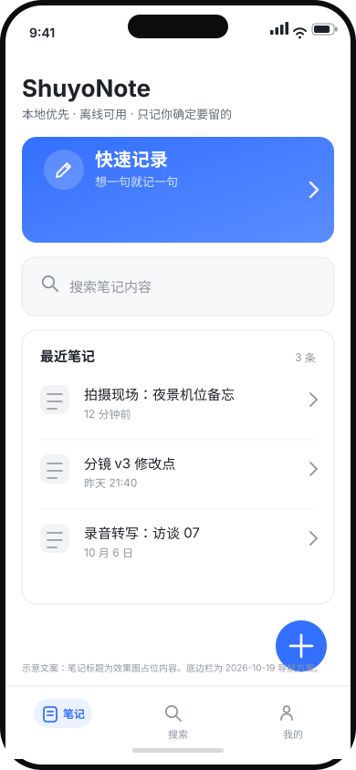
01 首页快速记录渐变主卡 + 搜索入口 + 最近笔记；底边栏「笔记」选中 + 浮「＋」
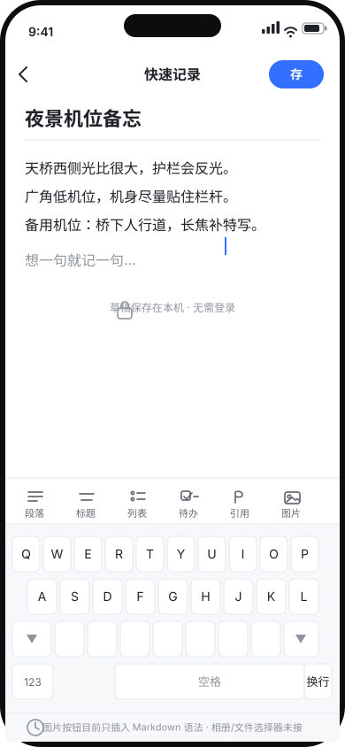
02 快速记录标题 + 「存」；键盘上方 6 项工具栏；草稿保存在本机
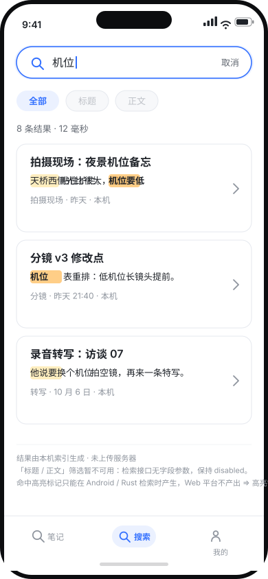
03 搜索聚焦框 + 两档命中高亮；标题/正文筛选 disabled 写明原因
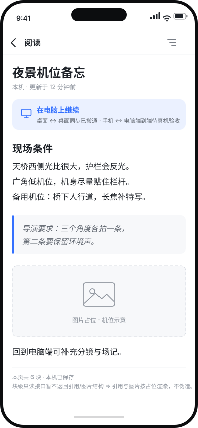
04 阅读按块类型渲染（标题/列表/引用/callout/图片）；图片有 src 真画、死链退占位；同步文案如实
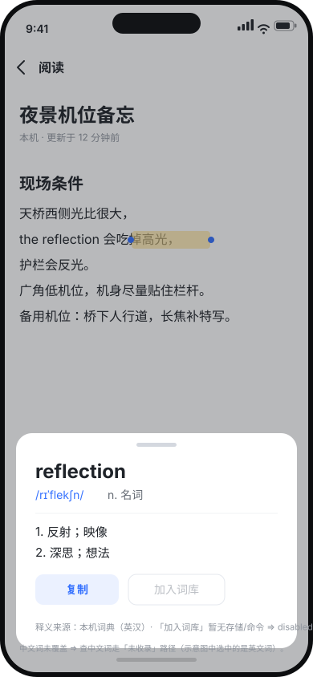
06 划词查词英文词选中浮出释义卡；加入词库 disabled；释义来源本机词典（英汉）
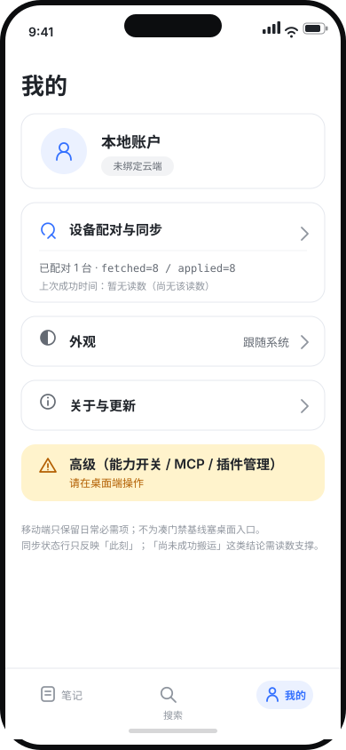
07 我的 / 设置账户 + 同步（上次成功时间暂无读数）+ 空间包 + 外观 + 关于 + 高级指向桌面端
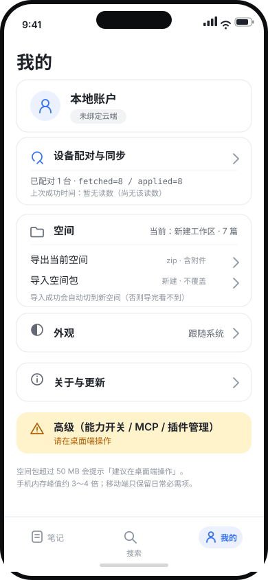
07b 设置 · 空间（原生档）导出当前空间 / 导入空间包；导入成功自动切到新空间
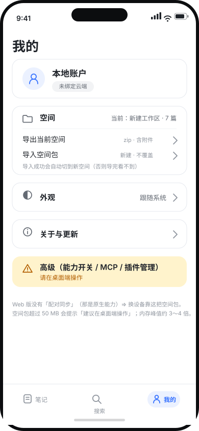
07c 设置 · 空间（Web 档）没有配对同步卡；脚注说明 Web 不提供多设备同步
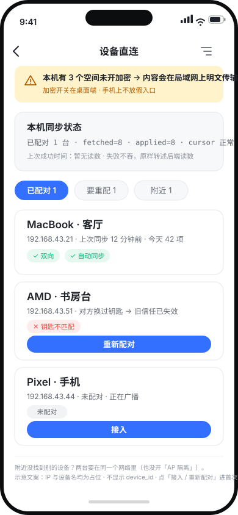
08 设备直连加密黄条 + 后端读数原样转述 + 三档筛选；无「立即同步」；不显示 device_id
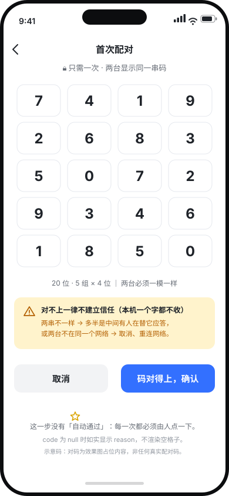
08b 首次配对20 位对码 5×4；对不上一律不建立信任；没有自动通过
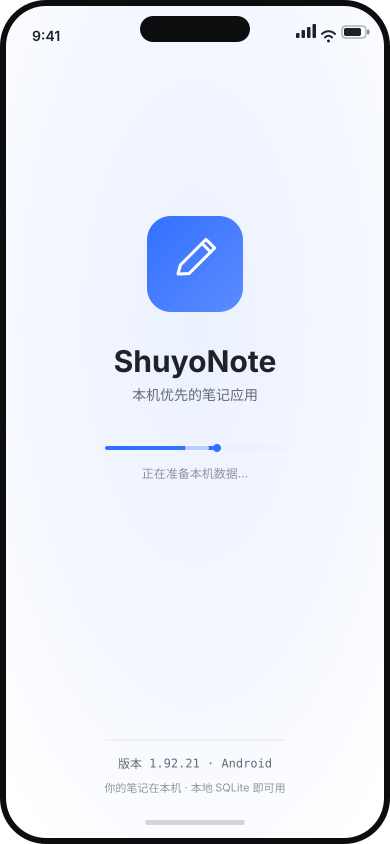
09 启动页浅色光晕 + 渐变图标 + 进度条；图内示例版号 1.92.21，实现版号 1.92.24
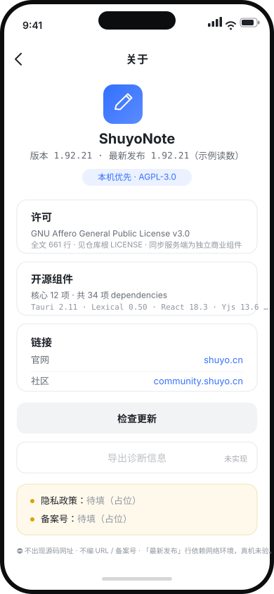
10 关于许可 AGPL-3.0 / 组件 12 项 / 链接仅官网与社区；隐私政策与备案号待填